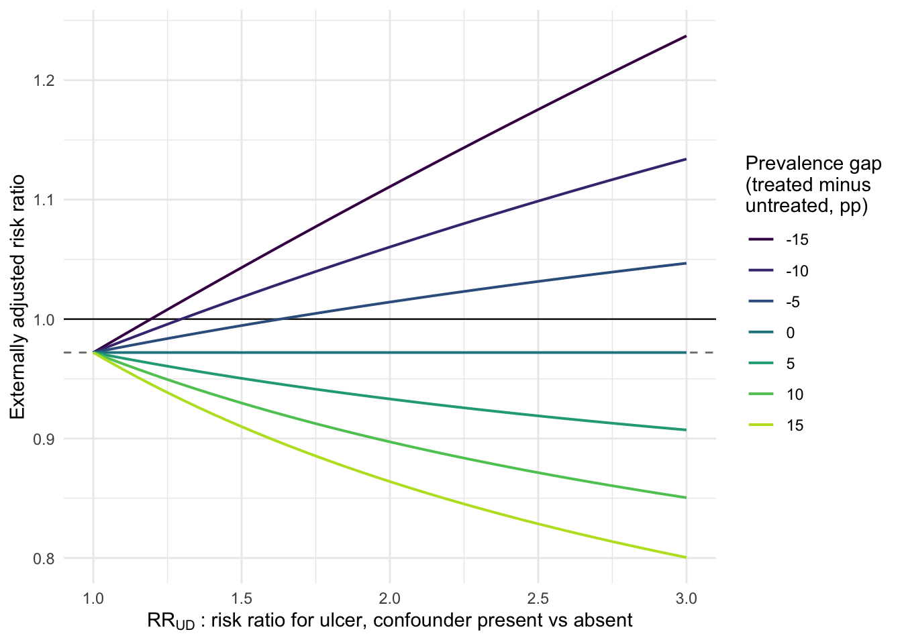

Chapter 14 Sensitivity analysis
Chapter 13 went looking for a source of variation in treatment that no unmeasured confounder could reach, and found one too small to settle anything. This chapter takes the other road out of the same difficulty. Instead of replacing the no-unmeasured-confounding assumption, we keep it and ask what it would cost us to be wrong. How prevalent, and how prognostic, would a confounder we never recorded have to be before it accounted for the association we reported? Unlike the assumption itself, that question has a computable answer. A sensitivity analysis does not tell us whether an estimate is right, but it does tell us how much unmeasured confounding would be required to make it wrong, which is a number a reader can weigh against what she knows about clinical practice.
14.1 What we assumed and cannot check
Every estimate in this book has leaned on conditional exchangeability. The mechanics varied a great deal: Chapter 7 put the covariates in an outcome model, Chapters 8 and 9 put them in a treatment model, Chapter 11 added a censoring model and Chapter 12 a deviation model at every interval. These are four different places to put the same list of nineteen variables, and one assumption sits underneath all of them: that within levels of that list, patients who received a Cox-2 selective agent and patients who received a nonselective NSAID were exchangeable.
Notice the asymmetry between that assumption and its companion. Positivity leaves traces: Chapter 9’s long tail of large weights and Chapter 8’s unmatchable patients were the data complaining that some covariate regions were nearly empty. Exchangeability, in contrast, leaves nothing behind. A cohort with a severe unmeasured confounder looks exactly like a cohort with none, with the same balance table, the same overlap plot, and the same effective sample size. Chapter 8’s diagnostics speak to the covariates we recorded and, by construction, cannot speak to the ones we did not.
So there is no test to run, only two useful responses. One is to change the assumption, which is what Chapter 13 did. The other is to hold it and quantify the departure that would overturn the finding, and that comes in two flavors. External adjustment asks us to name a specific confounder and supply its parameters, then returns the corrected estimate. The E-value inverts the question: given the estimate alone, what is the weakest confounder that would suffice?
14.2 External adjustment
The term, and the parameterization we use below, are Schneeweiss’s (2006), written for exactly the healthcare-database setting these cohorts come from.
Suppose a single binary unmeasured confounder \(U\) — present or absent, measured at baseline, with no interaction with treatment. Three numbers describe it: its prevalence among the treated, \(p_1\); its prevalence among the untreated, \(p_0\); and the risk ratio for the outcome comparing \(U = 1\) with \(U = 0\), written \(RR_{UD}\) and assumed common to both arms. The risk ratio we observe is then the true one multiplied by a bias factor,
\[RR_{\text{obs}} = RR_{\text{true}} \times \frac{p_1 (RR_{UD} - 1) + 1}{p_0 (RR_{UD} - 1) + 1},\]
each term of the fraction being the amount by which \(U\) inflates the risk in one arm. Solving for \(RR_{\text{true}}\) gives the correction, and the correction is the whole of our function.
adjust_rr_unmeasured <- function(rr_obs, p_u1, p_u0, rr_ud) {
rr_obs * (p_u0 * (rr_ud - 1) + 1) / (p_u1 * (rr_ud - 1) + 1)
}Two special cases are worth reading off the formula first. If \(p_1 = p_0\) the fraction is 1 however strong \(U\) is: a risk factor distributed identically across arms confounds nothing. If \(RR_{UD} = 1\) the fraction is 1 however unequally \(U\) is distributed. This restates Chapter 5’s requirement, that a confounder needs an arrow into treatment and an arrow into the outcome, as arithmetic.
Consider a concrete confounder. Cox-2 selective agents were marketed on
gastrointestinal safety, so a clinician worried about a patient’s stomach
had reason to prefer one. Some of that worry is captured in ns_covs,
since ppi_use, h2_antagonist_use, corticosteroid_use, and
aspirin_use are all partial proxies for perceived ulcer risk, and some
of it is not. Over-the-counter NSAID use, meaning the ibuprofen a patient
buys herself on top of what she is prescribed, appears in no survey
field, and heavy alcohol use is asked inconsistently and recorded
incompletely. Both raise ulcer risk, and both plausibly differ between
the arms.
Take a prevalence of 20% among nonselective initiators and sweep the other two parameters.
source("R/propensity.R"); source("R/iptw_estimator.R"); source("R/sensitivity.R")
ps_model <- reformulate(ns_covs, "cox2_init")
ipw_rr_fit <- iptw_estimator(ns, ps_model, outcome = "pud", treat = "cox2_init",
family = poisson(link = "log")) |>
filter(term == "cox2_init") |>
mutate(across(c(estimate, conf.low, conf.high), exp))
ipw_rr <- ipw_rr_fit$estimate
grid <- expand_grid(
rr_ud = seq(1, 3, by = 0.05),
delta = c(-0.15, -0.10, -0.05, 0, 0.05, 0.10, 0.15)
) |>
mutate(
p_u0 = 0.20,
p_u1 = p_u0 + delta,
rr_adj = adjust_rr_unmeasured(ipw_rr, p_u1, p_u0, rr_ud)
)ggplot(grid, aes(rr_ud, rr_adj, colour = factor(100 * delta), group = delta)) +
geom_hline(yintercept = 1, linewidth = 0.4) +
geom_hline(yintercept = ipw_rr, linetype = "dashed", colour = "grey50") +
geom_line(linewidth = 0.7) +
scale_colour_viridis_d(end = 0.9) +
labs(
x = expression(RR[UD]~": risk ratio for ulcer, confounder present vs absent"),
y = "Externally adjusted risk ratio",
colour = "Prevalence gap\n(treated minus\nuntreated, pp)"
) +
theme_minimal()
The flat line is the case with no imbalance; every curve pivots away from it, and which way it pivots depends entirely on the sign of the prevalence gap. Consider the upper family first, where the confounder is more common among the untreated. If over-the-counter ibuprofen use were rarer among Cox-2 initiators than among nonselective initiators, part of the apparent safety of the Cox-2 arm would be that advantage rather than the drug, and correcting for it raises the risk ratio. A five-point gap is enough to lift the adjusted estimate to the null once \(RR_{UD}\) reaches 1.65; a ten-point gap needs only 1.30, a fifteen-point gap 1.20, and at \(RR_{UD} = 3\) that last curve has carried the estimate to 1.24. None of those parameter values is extreme. A risk factor that raises ulcer risk by a fifth and differs by fifteen percentage points between arms is unremarkable, and yet it is enough to turn our estimate of nothing into an estimate of harm.
The lower family runs the other way and is the story we would probably tell first. Channeling, meaning the steering of patients with the worst stomachs toward the drug advertised as gentler on the stomach, implies exactly the opposite gap, and correcting for it pushes the risk ratio down: 0.86 at \(RR_{UD} = 2\) with a fifteen-point gap, 0.80 at \(RR_{UD} = 3\). Under that story our near-null result understates a genuine benefit.
Both families come from the same formula and the same data, and the data cannot choose between them, which is both the point of the exercise and the method’s main limitation. It is called external adjustment because the three parameters must come from outside the analysis, whether from a validation substudy that measured \(U\) on a subsample, a survey, or a published cohort. When they come from nowhere, the exercise draws a picture of what-if rather than correcting an estimate, which is worth doing so long as it is labeled as such. One further caution: the formula describes a single binary confounder, and several correlated unmeasured confounders do not collapse into one, so the arithmetic can understate the joint bias.
14.3 The E-value
External adjustment needed three numbers we do not have, whereas the E-value needs none. It is the minimum strength of association, expressed as a risk ratio, that an unmeasured confounder would have to have with both the treatment and the outcome — conditional on the covariates we did measure — to explain away the association we observed. The word “both” is doing the work here, since a variable strongly associated with Cox-2 initiation but unrelated to ulcers does no damage, and neither does a powerful ulcer risk factor that is balanced across arms. The E-value is the common value both associations would have to reach, and no smaller equal pair will do.
The derivation (VanderWeele and Ding 2017) shows that a confounder with treatment association \(a\) and outcome association \(b\) can inflate an observed risk ratio by at most \(ab / (a + b - 1)\). Setting that maximum equal to the observed risk ratio and imposing \(a = b\) gives a closed form: \(E = RR + \sqrt{RR\,(RR - 1)}\). For a protective estimate we invert first, since a confounder that could inflate a ratio could equally deflate its reciprocal.
evalue_rr <- function(rr, conf_low = NULL, conf_high = NULL) {
ev <- function(x) {
if (is.na(x)) return(NA_real_)
if (x < 1) x <- 1 / x
x + sqrt(x * (x - 1))
}
ci_bound <- if (!is.null(conf_low) && !is.null(conf_high)) {
# E-value for the bound closest to the null
if (conf_low > 1) conf_low else if (conf_high < 1) conf_high else 1
} else NA_real_
tibble(
quantity = c("point estimate", "confidence limit"),
value = c(rr, ci_bound),
e_value = c(ev(rr), if (is.na(ci_bound)) NA_real_ else if (ci_bound == 1) 1 else ev(ci_bound))
)
}The function returns two rows, and the second matters more. Moving a point estimate to the null is one question; making a finding compatible with the null is another, and that requires moving only whichever confidence bound lies nearer to 1. A result whose interval already crosses the null needs no help at all, which is why the function reports a confidence-limit E-value of exactly 1 in that case.
Apply it to Chapter 9’s weighted risk ratio, recomputed above.
| estimate | conf.low | conf.high |
|---|---|---|
| 0.972 | 0.654 | 1.444 |
evalue_rr(ipw_rr_fit$estimate, ipw_rr_fit$conf.low, ipw_rr_fit$conf.high) |>
knitr::kable(digits = 3)| quantity | value | e_value |
|---|---|---|
| point estimate | 0.972 | 1.201 |
| confidence limit | 1.000 | 1.000 |
The first row is straightforward. An unmeasured confounder associated with both Cox-2 initiation and peptic ulcer disease by risk ratios of about 1.20 each, over and above the nineteen covariates, would suffice to move this estimate to the null, which is a very weak confounder, weaker than most of the variables we did adjust for. The second row is blunter still: the interval runs from 0.65 to 1.44 and so already contains 1, so the E-value is 1 by definition. No unmeasured confounding whatsoever is required for these data to be compatible with no effect.
It is tempting to read a small E-value as an indictment of the analysis, although it is better understood as a property of the estimate. Near-null estimates always have E-values near 1, because there is almost nothing to explain away, and the number is doing precisely its job by reporting that this result is fragile. What would be dishonest is to compute the E-value only when it comes out large. The same formula applied to the crude risk ratio of 1.28 returns 1.88, and applied to Chapter 12’s five-year per-protocol risk ratio (0.28) it returns about 6.6. One formula gives three very different readings, and much of the difference reflects the size of the estimate being probed.
That third reading needs a caution the others do not, and it is the
caution that governs how we read any E-value. The quantity is always
defined over and above the covariates already adjusted for, so it is
only as reassuring as the adjustment underneath it. Chapter 9’s weighted
estimate carried nineteen baseline covariates in its weights, so its
E-value of 1.20 genuinely speaks about what was
left unmeasured. Chapter 12’s contrast carried none: as that chapter said
plainly, it weighted for deviation from protocol and left baseline
confounding alone, so the two arms differ at time zero. Its
6.6 therefore describes the total confounding,
measured and unmeasured together, that would be needed to explain the
result away, and a good deal of that total is measured, sitting unused in
sta_covs. Patients who sustain a statin for five years are healthier at
baseline than patients who never start one, in ways the statin cohort
records. The large number is therefore not evidence of robustness, but
mostly a restatement of how far from the null an unadjusted contrast sits,
and an E-value begins to say something about unmeasured confounding only
once the measured kind has been handled.
Two limits deserve mention. The E-value takes the two associations to be equal, so that if one is known to be weaker the other must be correspondingly larger, and a contour plot over the pair is the fuller display. Furthermore, it says nothing about whether such a confounder exists. What it does is convert an unanswerable question into a smaller and arguable one, which is the ambition of a sensitivity analysis and the reason it belongs in the results rather than in the discussion.
14.4 Negative control outcomes
Both devices so far concede that confounding cannot be detected and ask instead how much of it would be required. There is a third device, and it is more ambitious: it tries to detect the confounding. A negative control outcome is an outcome the treatment could not plausibly cause, chosen because it is subject to the same confounding as the outcome we actually care about. Since the true effect is null by assumption, any association that survives adjustment cannot be an effect; it is bias, and bias of roughly the kind afflicting the real analysis. Lipsitch, Tchetgen Tchetgen, and Cohen (2010, Epidemiology) set out the logic and the conditions under which it licenses an inference about the primary estimate.
The examples that made the method famous are worth carrying around. When influenza vaccination in the elderly is studied in the weeks before influenza begins circulating, the vaccinated appear substantially protected from death in a period when the vaccine cannot plausibly be working. That demonstration is Jackson and colleagues’ (2006). What the negative control reveals is that the people who get vaccinated are in better functional health than the people who do not, in ways claims data do not record. Similarly, patients adherent to statins have fewer traffic accidents and fewer fractures than nonadherent patients, which is the healthy-adherer effect declaring itself on an outcome no lipid-lowering mechanism can reach; that comparison is Dormuth and colleagues’ (2009). The course gives this a session of its own (session 23), and rightly, since the technique is best used as a gate rather than a footnote: if the negative control is run first and comes back non-null, the primary estimate should not yet be believed.
Our cohorts carry no true post-treatment negative outcome, so the most we
can do is illustrate the logic with a pre-treatment one. hyperlipidemia
is recorded in ns, is deliberately absent from ns_covs, and cannot be
caused by a prescribing decision made at the same visit. If the weights
built from the other nineteen covariates leave an association with it, the
weights are not reaching all of the confounding structure.
nco <- ns |> mutate(hld = as.integer(hyperlipidemia == "Yes"))
nco_fit <- iptw_estimator(nco, ps_model, outcome = "hld",
treat = "cox2_init", family = gaussian()) |>
filter(term == "cox2_init")
nco_fit## # A tibble: 1 × 7
## term estimate std.error statistic p.value conf.low conf.high
## <chr> <dbl> <dbl> <dbl> <dbl> <dbl> <dbl>
## 1 cox2_init -0.00114 0.0234 0.00238 0.961 -0.0469 0.0446Crude, hyperlipidemia is recorded for 16.2% of Cox-2 initiators against 13.0% of nonselective initiators, a gap of +3.2 percentage points. Weighted, the difference is -0.11 points, with an interval from -4.69 to +4.46. The check passes: weights that never saw hyperlipidemia nonetheless remove essentially all of its imbalance, which is mild evidence that the confounding structure they do capture is broad enough to carry unmeasured correlates of it along.
That result carries two qualifications. The first is why we had to use an
excluded covariate. Anything appearing in the treatment model is balanced
by the fitting itself; running this check on diabetes would return a
near-zero difference no matter how badly confounded the study was, and so
would tell us nothing. The informative negative control is always one the
adjustment did not see. The second is that a pre-treatment variable is a
weaker instrument than a genuine negative control outcome, which would be
measured after time zero and would therefore also probe whether the
follow-up itself is differential — selection, censoring, and detection
effects that a baseline covariate cannot speak to. A passing check here
should be read as one failure mode ruled out, not as exchangeability
established.
The two devices of this chapter are complements: an E-value says how much confounding could explain an estimate, whereas a negative control asks whether confounding is still present after adjustment.
14.5 Reporting a causal analysis
Almost everything in this book assembles into a checklist for reporting one causal analysis honestly, in six items, each of which has had a chapter of its own.
- State the target trial first (Chapters 4 and 6). Eligibility, time zero, the arms, the outcome, the follow-up window, the estimand — written down before any code is run. Most of what goes wrong in an observational study goes wrong here, in the alignment of those pieces, not in the estimator.
- Justify the adjustment set with a DAG (Chapter 5). The covariate list should follow from an asserted causal structure rather than from what happens to be in the file. Draw the variables you cannot measure too, as a node labeled \(U\); that node is what this chapter has been about.
- Show the design-stage diagnostics before any effect estimate (Chapters 8 and 9). Balance on every covariate, propensity score overlap, the weight distribution, the effective sample size. Print them whether or not they flatter the analysis, since the unflattering ones are usually the informative ones.
- Report marginal contrasts with intervals, and name the estimand (Chapters 3, 7, and 10). ATE, ATT, LATE, or per-protocol — these are different quantities, and a table that mixes them without saying so is not comparable to itself. Give an absolute and a relative measure: the risk difference carries the clinical magnitude, the risk ratio travels better between populations.
- Probe the untestable assumption (this chapter). An E-value beside the estimate costs one line; an external adjustment, where parameters exist, costs a paragraph. Alternative specifications — truncation levels, covariate sets, horizons — belong here too, declared in advance rather than chosen afterward.
- Disclose limitations specifically. Not “residual confounding cannot be excluded,” which is true of every observational study ever published and therefore says nothing, but which variable, in which direction, and of roughly what magnitude.
Running our own Cox-2 analysis through that list gives the following report. The crude comparison gave a risk difference of +2.73 percentage points and a risk ratio of 1.28, apparent harm. Standardization moved it across the null to -0.55 points and IPTW to -0.29 points, two estimators leaning on different nuisance models and landing in the same place. Matching gave -4.18 points but for a different estimand and on roughly a sixth of the data. The instrumental variable analysis was too wide to constrain anything. Every one of those intervals spans the null, and the E-value of 1.20 says the weighted estimate would not survive a confounder we would struggle to notice. With 288 ulcer cases and 240 Cox-2 initiators, the defensible conclusion is that the crude signal of harm was confounding, and that these data cannot distinguish a modest harm from a modest benefit. A paper that reported the matched estimate as evidence of benefit and omitted the rest would be easy to write and hard to refute from the abstract, and it would be wrong.
Over fourteen chapters we assembled a toolkit of standardization,
propensity scores, weights for treatment and censoring and protocol
deviation, cloned trials, and instruments, applied all of it to one
modest question about two drugs, and concluded that we do not know the
answer. The methods were not wasted on that conclusion, since they are
what allow us to say that we do not know and to say why, which is a
different position from the false confidence of the crude comparison we
began with. Causal inference is often taught as a collection of
estimators, because estimators are the part that fits into a chapter. The
more durable habit is to ask, before reaching for any of them, what trial
is being emulated, what would have to be true for the answer to mean what
we want it to mean, and how far from true that could be before we would
change our minds. The functions in R/ are there to be reused and
rewritten; the habit is the part that transfers.
14.6 Exercises
- Chapter 12’s clone-censor-weight analysis put the five-year risk at
1.61% under sustained statin use and 5.78% under no statin. Compute
the risk ratio, pass it to
evalue_rr(), and interpret the result in a sentence a clinician would understand. Compare it with the 1.20 we obtained here. That bootstrap interval was wide: explain why the confidence-limit E-value is the number you would report. Then say what that E-value is a statement about, given that Chapter 12’s contrast adjusts for deviation from protocol but not for baseline covariates, and name the E-value assumption that sits least comfortably with a chapter whose other threat was time-varying deviation rather than a baseline confounder. - Using
adjust_rr_unmeasured(), find the confounder that would fully explain the crude Cox-2 association, bringing its risk ratio of 1.28 to 1.0. Fix \(p_0 = 0.20\) and solve numerically for the \(p_1\) required at \(RR_{UD}\) of 1.5, 2, and 3. Would any of those combinations be credible for a real gastrointestinal risk factor? Repeat for the IPTW risk ratio and explain, in terms of the bias factor, why the answer changes so much. - Apply
adjust_rr_unmeasured()to the IPTW risk ratio withp_u1 = 0.10,p_u0 = 0.25, andrr_ud = 2— a confounder much more common among the untreated. Report the adjusted risk ratio and state which way the bias was running. Then argue the substance: name a gastrointestinal risk factor you would expect to be more common among nonselective initiators than among Cox-2 initiators, explain why that pattern is harder to justify than channeling, and say which family of curves in this chapter’s figure a skeptical reader should therefore find more credible. - Repeat the negative control check with
depressionin place ofhyperlipidemia— also present inns, also absent fromns_covs, and also not caused by the choice of NSAID at initiation. Report the weighted difference and its interval. Does this control pass as cleanly as the first? Then argue the harder half: a negative control is only as good as the claim that it shares the confounding structure of the real outcome, so say whether depression plausibly sits on the same paths to peptic ulcer disease as the confounders inns_covs, and what a failing check would and would not license you to conclude about the Cox-2 estimate.